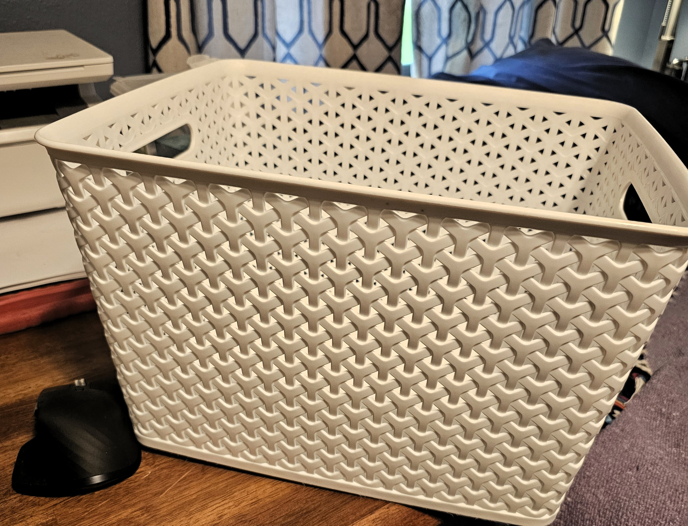
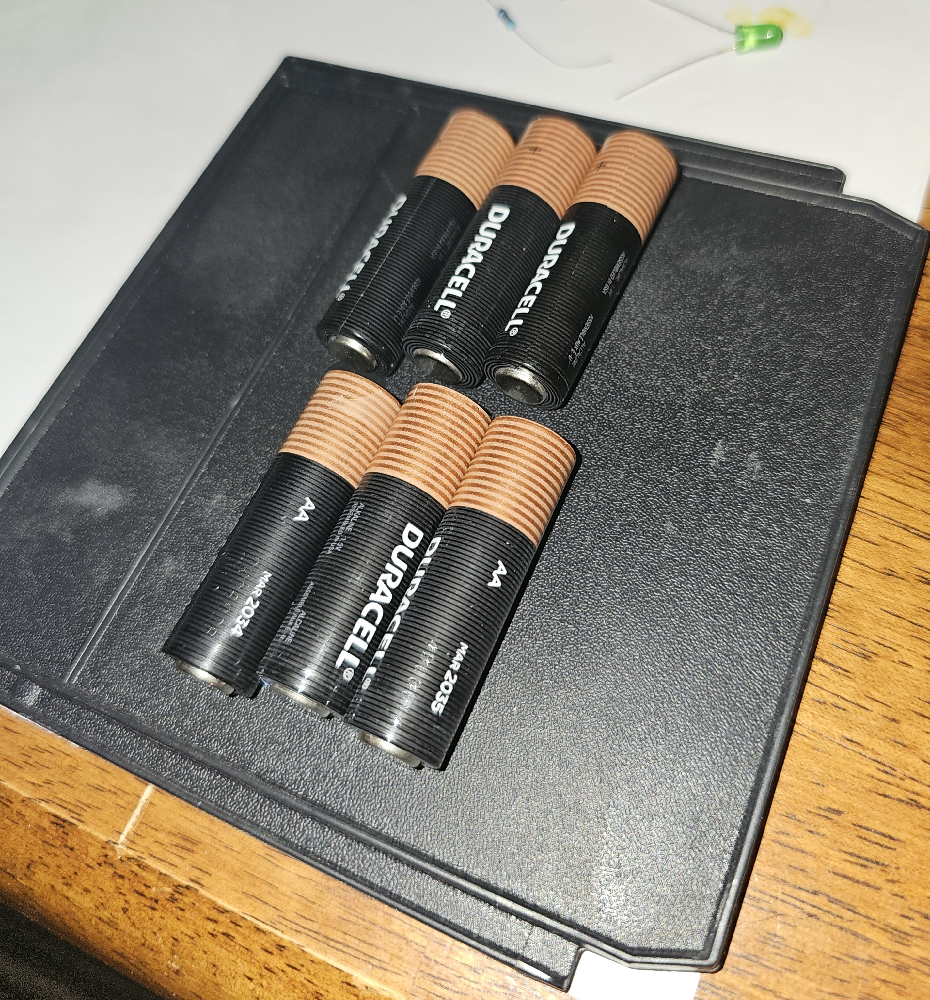

Note that no endorsement is offered to any particular brand of battery here, in case you can't tell from the weird mix.
Step One: A Very Basic Box
So let's not overthink it. Let's see if we can cobble together a basic 9VDC power source (6 AA cells) in an easy-to-use, home-made battery box. We'll probably build more of these, and with different voltage outputs, but let's just start here.
First thing we'll need is an enclosure. You can buy them, or you can try to rip them out of old devices, but at the moment, I don't have any old devices I'm willing to give up. So we'll need a material. Plastic is the best choice. I happen to have a good bit of old vinyl siding lying around, so let me see if I can put my hands on a piece of that stuff. It'll make a good starting battery box.
Well, on the way to the shed to look for siding scraps, I stumbled across this plastic basket -- one of many I bought when we lived in a tiny home. I still have all them them.

This one looks like you could cut a piece off for a battery box, but it really looks like it might be better saved to house one or more instruments. Think I'll save it and go back to looking for old siding.... Well, no siding to be found (did we throw it all away?), but I found three things that might be useful:

An old broadband connection enclosure, an AC transformer of some kind, and a toolbox divider.
The broadband enclosure looks like it might work as a small instrument case, so I'll save it for later. I grabbed the AC transformer because these usually have voltage regulators built into them, so maybe I can scavenge that and add it to my power supply in a later step. But the toolbox divider is the winner.
I bought a professional quality rolling toolbox years ago, and it came with dividers -- lots of dividers. If you used them all, you wouldn't be able to store a tool bigger than a tape measure. I've still got them all in a big trunk at the bottom of the toolbox stack. They'll come in handy for building our enclosures going forward, but this one should work just fine as a start to our power supply.
For 9VDC, I need six batteries. As you can see, there's at least one configuration that looks like it might fit six batteries.

This looks like it might work, at least to start.